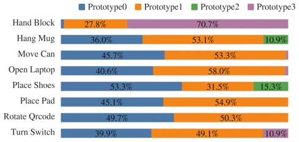
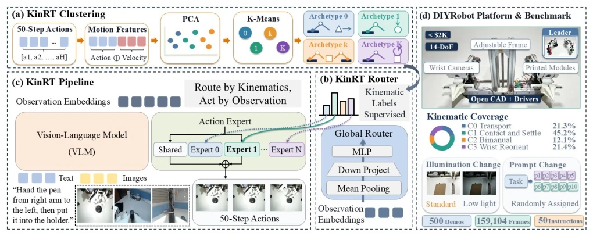
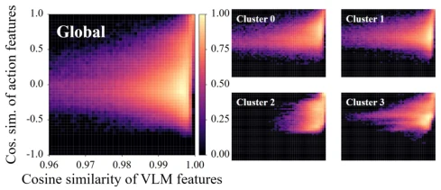
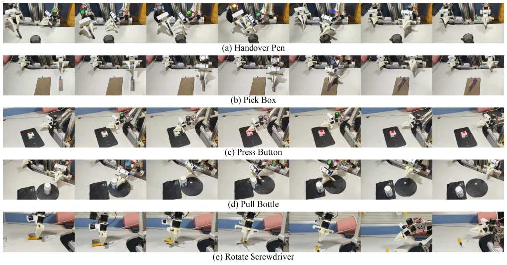

This paper equips the MoE-VLA router with a "kinematic navigator". The authors keenly point out that visual similarity does not imply action similarity, causing implicit routing to often "point the wrong way". They utilize offline action clustering as a supervision signal to forcibly distill kinematic knowledge into visual features, implementing an asymmetric bridge. Although this approach outperforms baselines in both simulation and on real hardware, relying on offline clustering implies potential failure when facing unseen motion patterns. The DIYRobot platform is a bonus, cheap and open-source, but whether the 14-DoF manipulator can represent complex scenarios remains doubtful. Overall, the idea is clear and effects are significant, but the "privileged information" assumption may collapse in extreme dynamic environments, and pre-computation is still required during inference, not necessarily completely negligible.
研究动机Motivation
VLA 模型扩展任务时，底层运动学异构性导致梯度干扰 (Yu et al. 2020)。MoE 虽能缓解参数竞争，但路由器依赖隐式梯度更新，缺乏显式信号 (Zoph et al. 2022)。视觉近似的场景（如“拧盖”vs“举杯”）可能对应截然不同的运动学，而视觉差异大的任务（如“推盘子”vs“推书”）可能运动学同构。现有 MoE 路由仅基于视觉 - 语言观察，造成训练（有动作信号）与推理（无动作信号）的信息不对称，导致物理上不恰当的专家分配。这种隐式路由在自然语言处理中已观察到专家利用不均 (Zoph et al. 2022)，在具身操作中因运动学异构性更严重。
When VLA models expand tasks, underlying kinematic heterogeneity causes gradient interference (Yu et al. 2020). Although MoE can alleviate parameter competition, routers rely on implicit gradient updates and lack explicit signals (Zoph et al. 2022). Visually similar scenarios (e.g., "unscrewing cap" vs. "raising cup") may correspond to drastically different kinematics, while tasks with large visual differences (e.g., "pushing plate" vs. "pushing book") may be kinematically isomorphic. Existing MoE routing relies solely on visual-language observations, creating information asymmetry between training (with action signals) and inference (without action signals), leading to physically inappropriate expert allocation. This implicit routing has observed uneven expert utilization in natural language processing (Zoph et al. 2022), which is more severe in embodied operations due to kinematic heterogeneity.

Figure 1: Illustration of kinematic archetype collapse.
Proposes the KinRT paradigm, core is "kinematic supervision explicit routing". Pipeline divided into three stages: 1. Kinematic prototype clustering: PCA dimensionality reduction on action trajectories (position + velocity) followed by K-means clustering, obtaining prototype IDs as Ground Truth. 2. Kinematic supervised global router: Train the router using clustering IDs to predict prototype IDs from visual-language features, adopting cross-entropy loss, and introducing sample balancing strategies. 3. Observation-driven action generation: During inference, the router uses only visual-language input, requiring no action priors. Architecturally, the FFN of Transformer blocks is replaced with MoE, containing shared branches and routing expert branches, adopting Top-K routing. Through this asymmetric bridging, the structural understanding of the action space is distilled into the observation space, solving the information asymmetry problem between training and inference.

Figure 2: Overview of the proposed KinRT paradigm and our newly introduced DIYRobot platform.

Figure 3: Demonstrations of the relationship between action- velocity space and visual-linguistic observation space.
Benchmarked on RoboTwin simulation and DIYRobot real hardware. Baselines include OpenVLA, π0, π0.5, Hi-MoE, AdaMoE. Metric is success rate. KinRT-LoRA averages 23.26% improvement on RoboTwin, 20.27% on real hardware. Ablation studies show balancing sampling coefficient α=0.5 is best, and action + velocity feature clustering outperforms single features. Proves kinematic isomorphism is more suitable for routing than visual similarity. Improvements are largest on bimanual coordination and fine contact tasks, verifying expert specialization capabilities. DIYRobot platform is constructed by 3D printing, cost under 2000 USD, includes 5 tasks each with 100 demonstrations. Experiments show KinRT performs robustly in sim-to-real transfer, outperforming full parameter fine-tuning.

Figure 4: Demonstrations of the five manipulation tasks performed on our DIYRobot platform, where the left-to-right sequence indicates the temporal progression of each operation.